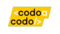

    <!-- ======= Resume Section ======= -->
    <section id="resume" class="resume">
        <div class="container" data-aos="fade-up">
  
          <div class="section-title">
            <div class="edit-title">
              <h2>Resumen</h2>
              <i routerLink="/resumen" routerLinkActive='visually-hidden'  class='bi bi-pen-fill edit-icon' *ngIf="edit"></i>
            </div>
            <p>Me recibí de tecnico en Electrónica en la EESTN°1 De Merlo y fue ahi donde hice mi primer contacto 
                con la programacion, la cual luego se convertiría en una de mis mayores pasiones.
                Tambien soy un amante de la matemática y la física, los gustos que me llevaron a estudiar la carrera de 
                ingeniería. Comence estudiando ingeniería electronica, luego pase por industrial hasta que finalmente 
                gracias a un curso de programacion competitiva brindado por la UNLaM para el ICPC descubri mi talento 
                para la programación.
            </p>
          </div>
  
          <div class="row">
            <div class="col-lg-6">
              <h3 class="resume-title">Educación</h3>
              <div class="resume-item">
                <h4>Ingeniería Informática</h4>
                <h5>2017 - en curso</h5>
                <div class="row">
                    
                    <p class="col-11 m-0 p-0 align-self-center"><b><em>Universidad Nacional de La Matanza, Buenos Aires, Argentina</em></b></p>
                </div>
                <p class="mb-0">Plan de estudio 2009:</p>
                <a href="https://ingenieria.unlam.edu.ar/index.php?seccion=3&idArticulo=30">
                    https://ingenieria.unlam.edu.ar/index.php?seccion=3&idArticulo=30</a>
              </div>
              <div class="resume-item">
                <h4>Desarrollo web Full Stacks</h4>
                <h5>2021 - 2023</h5>
                <div class="row">
                    
                    <p class="col-10 m-0 p-0 align-self-center"><b><em>Argentina Programa #YoProgramo</em></b></p>
                </div>
                <p class="m-1">Angular &amp; Java</p>
                <a href="https://www.argentina.gob.ar/produccion/argentina-programa/segunda-etapa">
                    https://www.argentina.gob.ar/produccion/argentina-programa/segunda-etapa
                </a>
              </div>
              <div class="resume-item">
                <h4>Desarrollo web Full Stacks</h4>
                <h5>07/2022 - 12/2022</h5>
                <div class="row">
                    
                    <p class="col-10 m-0 p-0  align-self-center"><b><em>Codo a Codo - Ciudad de Buenos Aires</em></b></p>
                </div>
                <p class="m-1">VUE.JS &amp; Python</p>
                <ul>
                    <li>Vue.js</li>
                    <li>Git</li>
                    <li>SCRUM</li>
                    <li>MySQL</li>
                    <li>Python</li>
                    <li>Django</li>
                </ul>
              </div>
            </div>
            <div class="col-lg-6" hidden>
              <h3 class="resume-title">Experiencia Laboral</h3>
              <div class="resume-item">
                <h4>Una experiencia</h4>
                <h5>2019 - Present</h5>
                <p><em>Experion, New York, NY </em></p>
                <ul>
                  <li>Lead in the design, development, and implementation of the graphic, layout, and production communication materials</li>
                  <li>Delegate tasks to the 7 members of the design team and provide counsel on all aspects of the project. </li>
                  <li>Supervise the assessment of all graphic materials in order to ensure quality and accuracy of the design</li>
                  <li>Oversee the efficient use of production project budgets ranging from $2,000 - $25,000</li>
                </ul>
              </div>
              <div class="resume-item">
                <h4>Otra experiencia</h4>
                <h5>2017 - 2018</h5>
                <p><em>Stepping Stone Advertising, New York, NY</em></p>
                <ul>
                  <li>Developed numerous marketing programs (logos, brochures,infographics, presentations, and advertisements).</li>
                  <li>Managed up to 5 projects or tasks at a given time while under pressure</li>
                  <li>Recommended and consulted with clients on the most appropriate graphic design</li>
                  <li>Created 4+ design presentations and proposals a month for clients and account managers</li>
                </ul>
              </div>
            </div>
          </div>
  
        </div>
      </section><!-- End Resume Section -->